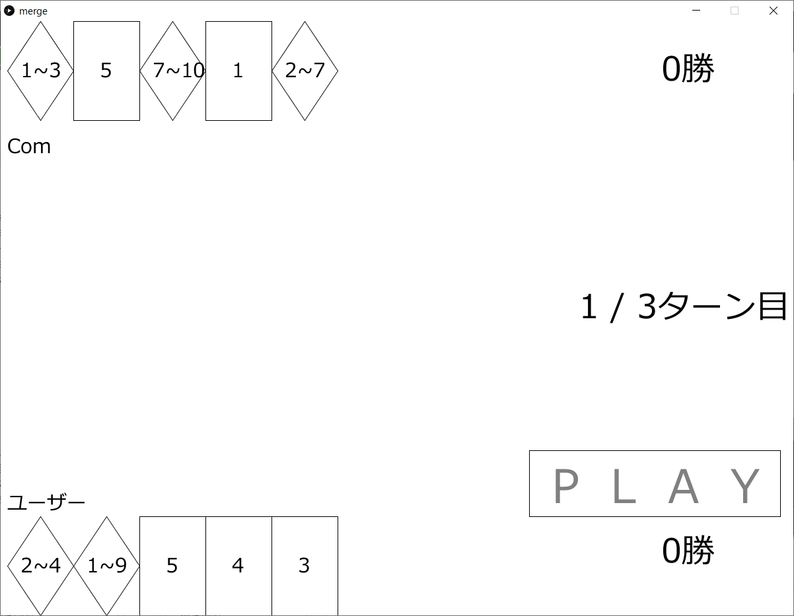
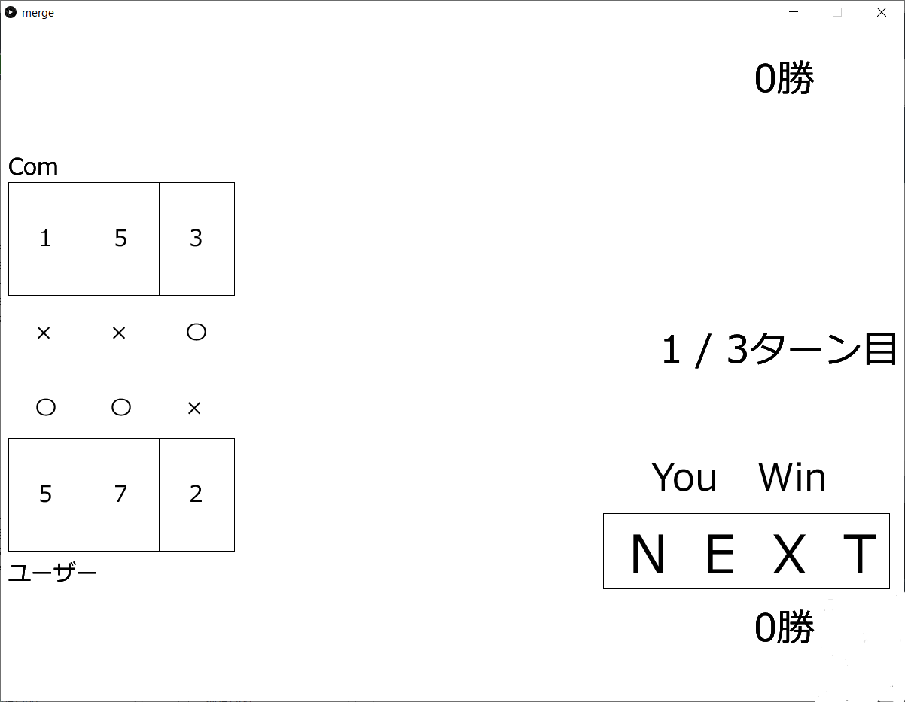
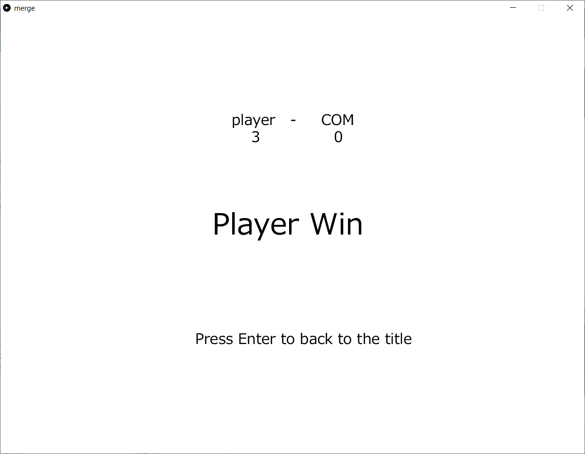
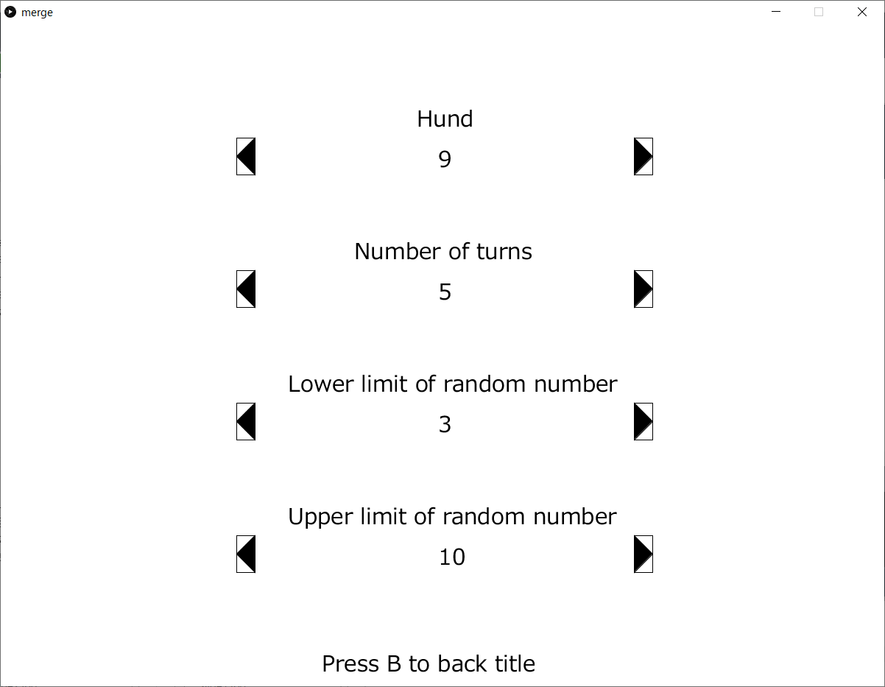
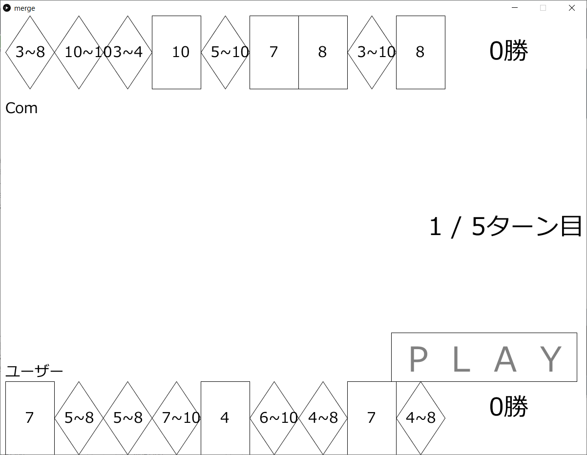

まずタイトル画面が表示される。エンターキーを押すとゲームがスタートして、Qキーを押せばコンフィグモード（手札・ターン数の設定）に入る。

エンターキーを押すと、ゲームが始まる。自分の手札は画面の下側にあるので、それをクリックして手札を選ぶ。
規定枚数選ぶと灰色で「PLAY」と表示されていた文字が黒色に変わるので、それをクリックする。
クリックをすると、自分と相手の手札の比較が始まり、勝った回数が多い方が、このターンの勝者となり一点を獲得する。
全てのターンが終わっていない時に「NEXT」をクリックすると、次のターンに移る。終わっている時は最終結果画面に移る。
最終的により多くの点数を獲得した方が今回のゲームの勝者となる。エンターキーを押すとタイトル画面に戻る。
タイトル画面でQキーを押すと設定モードに移り、設定画面が表示される。
上から手札の枚数、プレイするターン数、乱数の下限値、乱数の上限値を管理する項目が表示されている。
左右のボタンをクリックすれば数値を変える事が出来る。設定を変更した後のゲーム画面の例が以下の画像である。
